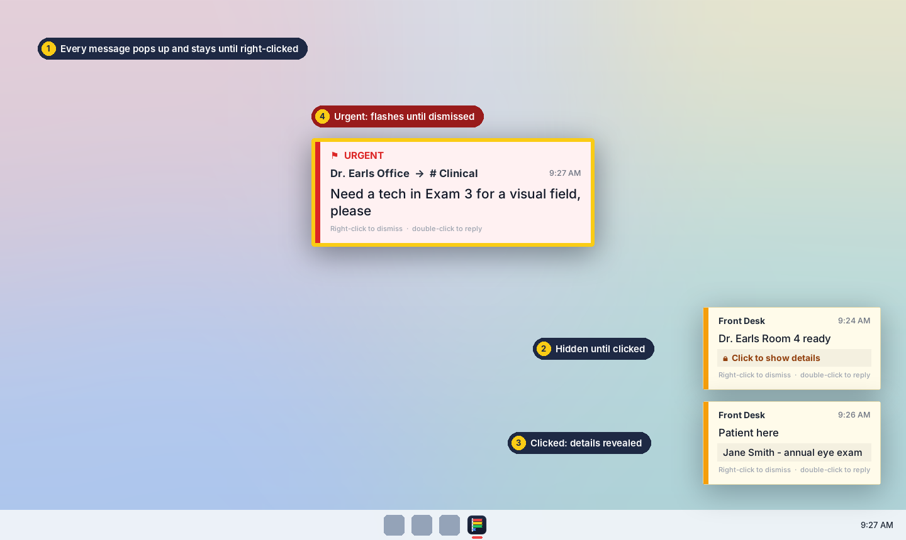
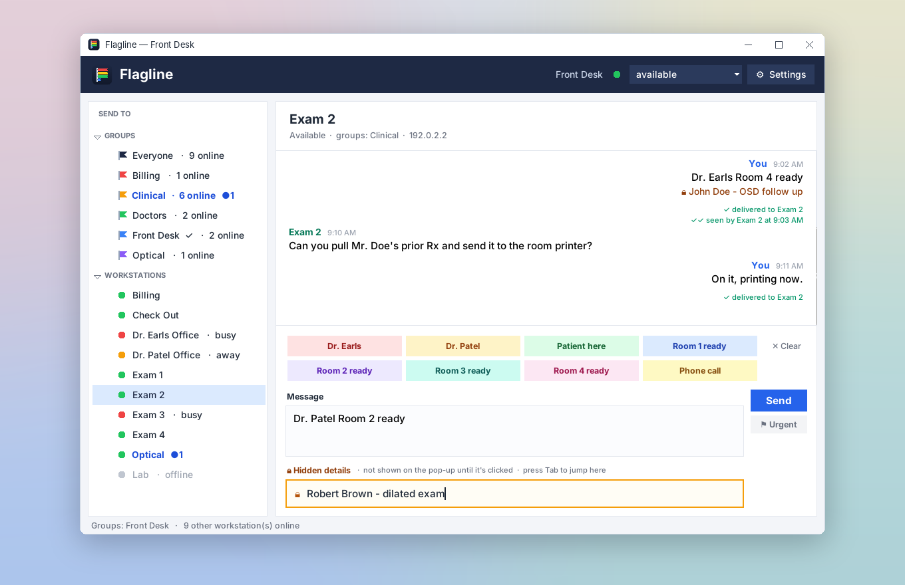
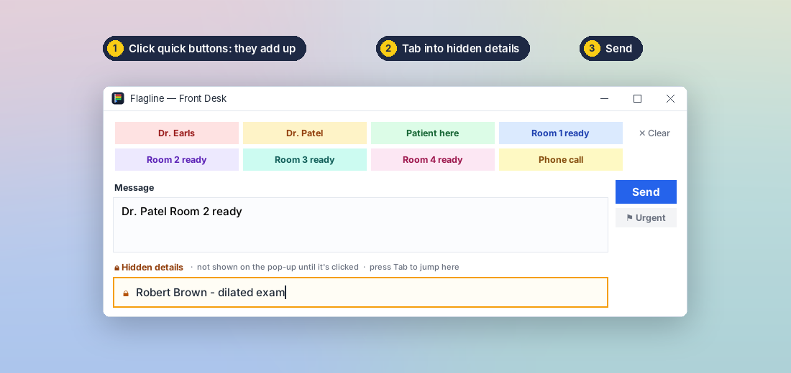

Flagline
Interoffice messaging for Windows PCs on one office network. Every workstation has a name and can join groups, so you can message one PC, a group, or everyone. No server and no internet: the PCs find each other on their own.
Download
For Windows 10 and 11. This link always gives the newest version.
Also get firewall.bat for the one-time firewall setup. Windows may say it protected your PC: choose More info, then Run anyway. Earlier versions are on the releases page.
What it does

- Sticky notes that stay on screen until right-clicked, which tells the sender it was seen. Double-click a note to reply.
- Urgent messages are big and red in the middle of the screen, flash, and play the Windows alert. They get through Do not disturb.
- Hidden details: the note shows only the message, such as "Room 4 ready", and the details appear when someone clicks it.
- Quick buttons that add up: click "Dr. Smith", then "Room 4 ready". The office list comes from a shared folder, and each PC can change its own.
- Chat windows for a short back-and-forth that doesn't disappear when a note is dismissed.
- Groups such as Front Desk or Clinical, plus Everyone.
- Messages wait for a PC that's off and arrive when it's back.


Patient names in these pictures are made up.
Install
- Put
Flagline.exeandfirewall.batin a folder the PC's user can write to, such asC:\Flagline\. Not Program Files, because updates need to replace the file. - Right-click
firewall.batand choose Run as administrator, once per PC. It lets Flagline accept traffic only from the office network. - Run Flagline and open ⚙ Settings. Set the workstation name, its groups, the shared folder (for example
\\server\share\Flagline) and the office key. Use the same office key on every PC.
Flagline starts with Windows and sits in the system tray.
The office key
The office key encrypts everything Flagline sends and the history on each PC. Use at least 16 characters, ideally 4 or 5 random words. Don't use a name, a birthday, the office name, or a password used anywhere else. Share it in person, and change it on every PC when someone who knew it leaves. Without one, Flagline uses a default key that is publicly known, so always set your own.
Updates
Copy the new Flagline.exe and version.txt from a release into the shared folder. Each PC checks when it starts and every hour, then updates and restarts itself. Open notes and waiting messages are kept.
Privacy
Flagline only talks to other Flagline PCs on the office network. It sends nothing to the internet and has no accounts, tracking or analytics. Traffic is encrypted with AES-256 using the office key, and each PC's 90-day history is encrypted on disk.
About
Contact: drnickearls@gmail.com